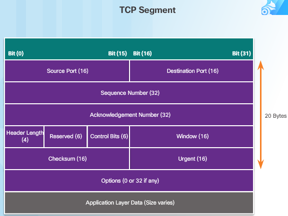

Transmission Control Protocol/ Internet Protocol adalah versi layer yang lebih sederhana dari OSI Layer.
TCP/IP bisa diibaratkan bahasa, ketika bertukar informasi, maka kita memerlukan bahasa yang sama dan
dimengerti oleh kedua belah pihak. Melalui TCP/IP, menghubungkan dua buah device atau lebih dalam sebuah network bisa dilakukan.
Terdapat 4 lapisan Layer pada TCP/IP yaitu :
1. Application Layer
Dalam application layer, terdapat berbagai service protokol untuk mengambil data dari suatu server.
Berikut adalah beberapa Service Protokol dalam application layer :
a. DNS (Domain Name Service Protokol) berfungsi menerjemahkan nama host menjadi alamat IP.
b. HTTP (Hypertext Transfer Protocol) berfungsi untuk mentransfer file Web dari WWW (World Wide Web).
c. SMTP (Simple Mail Transfer Protocol) untuk transfer data E-mail.
d. FTP (File Transfer Protocol) membuat sambungan ke server atau komputer tertentu untuk mengirim data.
e. TelNet, digunakan untuk memberikan akses jarak jauh (remote).
f. VoIP (Voice over IP) untuk menelpon melalui Internet, biasanya dalam bentuk UDP.
Lapisan transpor bertanggung jawab untuk menyediakan layanan-layanan yang dapat diandalkan
kepada protokol-protokol yang terletak di atasnya. Layanan yang dimaksud antara lain:
a. Flow Control, yaitu perangkat mentransmisikan data tidak melebihi kemampuan perangkat yang menerima data.
b. Package Sequencing, yaitu membuat data menjadi segmen-segmen kemudian mengurutkannya sebelum dikirim agar penerima
bisa melakukan reassembly dengan mudah.
c. Acknowlegdement, yaitu pengakuan akan data yang diterima telah lengkap atau belum lengkap sehingga data dapat dikirim kembali.
d. Multiplexing, yaitu menggabungkan data dari berbagai sumber dan mengirimkannya ke melalui satu jalur saja.
Protokol yang terdapat dalam transport adalah TCP dan UDP.
Internet layer bertanggungjawab atas transmisi paket data dalam Internet. Protokol yang digunakan dalam layer
ini sebagai berikut :
a. IP (Internet Protocol), yaitu connectionless dan unreliable protokol yang menggunakan pengiriman Best-Effort (UDP).
b. ICMP (Internet Control Message Protocol), yaitu mengirim pesan erroer dan memantau antrian data.
c. IGMP (Internet Group Message Protocol), sama dengan ICMP, namun untuk IGMP langsung mengirimkan pesan ke beberapa device sekaligus.
Layer ini sering juga disebut sebagai host-to-network Layer. Layer menangani semua komponen dan proses yang berkaitan dengan physical link, baik secara fisik maupun logical. Informasi mengenai Teknologi Jaringan yang digunakan juga ditentukan pada Layer ini. Pada layer ini terdapat protokol-protokol seperti ethernet pada LAN, PPP pada WAN, dan juga Frame Relay.
→Mengklasifikasikan kerja dari proses transfer data.
→Setiap lapisan mengerjakan pekerjaan spesifik,kemudian diteruskan ke lapisan berikutnya.
→Mempermudah pemahaman akan cara kerja transmisi data.
→Membantu perancangan protokol.
1. Tracking Conversation
Track seiap arus data antara aplikasi source dan detination. tujuannya agar mengetahui dari mana fata tersebut dikirim/berasal. Dan juga agar diketahui data nantinya akan pergi ke port yang sesuai.
Memecah data menjadi segmen yang nantinya akan lebih mudah untuk dikirim/terima. Disini juga terjadi conversation multiplexing, yaitu segmen-segmen data dari komunikasi/aplikasi yang berbeda-beda.
Memastikan walau banyak aplikasi yang terbuka di perangkat, semua aplikasi mendapat data yang benar melalui port number.
Memastikan data yang ditransfer ke layer session atau ke layer network dalam keadaan sempurna.

→ Source dan Destination Port : Digunakan untuk mengidentifikasi layanan aplikasi tujuan.
→ Sequence Number : Digunakan untuk pengumpulan kembali data saat sampai tujuan (reassembly).
→ Acknowlegment Number : Memberikan informasi ketika data yang dikirim telah sampai dan siap untuk pengiriman baru.
Jika data hilang sebagian, maka menginformasikan untuk pengiriman data kembali.
→ Header lenght : Menunjukkan panjang header TCP.
→ Reserved : Bagian ini adalah header cadangan, biasanya diabaikan oleh penerima.
→ Control Bits : Menunjukkan tujuan dan fungsi segmen TCP. Bagian ini terdiri dari:
a. URG : Berfungsi sebagai data penting yang didahulukan.
b. PSH : Berfungsi mengubah transmisi menjadi mode push.
c. ACK : Berfungsi sebagai konfirmasi paket boleh dikirmkan dan didefinisikan dalam
Acknowlegde Number.
d. RST : Digunakan saat koneksi akan di akhiri, atau jika terjadi kendala dan harus mematikan koneksi.
e. SYN : Yaitu Synchronize, berfungsi untuk membentuk koneksi antar device.
f. FIN : Penutupan konesi saat semua data telah terkirim dengan baik.
→ Window Size : Jumlah byte yang bisa diterima sekaligus. Bagian ini juga membatasi jumlah byte yang dikirim.
→ Checksum : Digunakan untuk pengecekan kesalahan pada header segmen dan data.
→ Urgent : Header ini akan aktif jika URG pada Control Bit aktif. Urgent Pointer menunjukkan lokasi data yang akan
ditransmisikan dengan mode urgent.
Pembatasan bytes yang bisa diterima oleh mesin penerima agar reliability transmisi dapat terjaga.
Ketika Source sudah menerima Acknowlegde bahwa bytes sudah diterima, maka source bisa menambahkannya lagi.
Untuk mengefisienkan pengiriman data, digunakan window size untuk menentukan seberapa besar ukuran
yang dapat diterima oleh penerima, kemudian pengirim mengirim dengan byte-byte yang nantinya mencukupi ukuran window size,
kemudian mengirimkan pernyataan Acknowlegde. Biasanya, pengirim tidak perlu menunggu penerima mengirim Acknowlegde
sampai semua bytes yang dikirim sampai, acknowlege dikirim sementara pengirim mengirim segmentnya(bytes).
Establishment
1. Inisiasi client meminta koneksi kepada server.
2. Server acknowlege dan me-request session dengan client.
3. Client acknowlege dan membentuk session dengan server.
Termination
1. Client Mengirim flag FIN (Finish) yang berada pada control bit TCP Header.
2. Untuk mengakhiri session, server melakukan two-way handshakes yaitu mengirim ACK,dan FIN kepada Client.
3. Client meng-acknowledge FIN dari Sever dan mengakhiri koneksi.
Ada dua teknik yang digunakan untuk mengatasi kongesti:
1. Additive increase: meningkatkan congestion window (cwnd) sampai ukuran segment maksimum (MSS) pada setiap RTT sampai loss terdeteksi.
2. Multiplicative decrease, TCP akan menurunkan kecepatan sampai 50% dari kecepatan tertinggi ketika loss terdeteksi.
Untuk cara pertama :
→ Pada saat memulai koneksi, kecepatan ditingkatkan secara eksponensial sampai terjadi loss pertama.
→ Permulaan cwnd = 1 MSS , Menggandakan cwnd setiap round trip time (RTT).
→ Dilakukan dengan meningkatkan cwnd setiap kali ACK diterima.
Untuk cara kedua :
→ Mengurangi nomor byte yang dikirim disebabkan tidak menerima Acknowlegde dari server.
Created by Andi Afwan Ali
Contact Person
(+62)81224504326